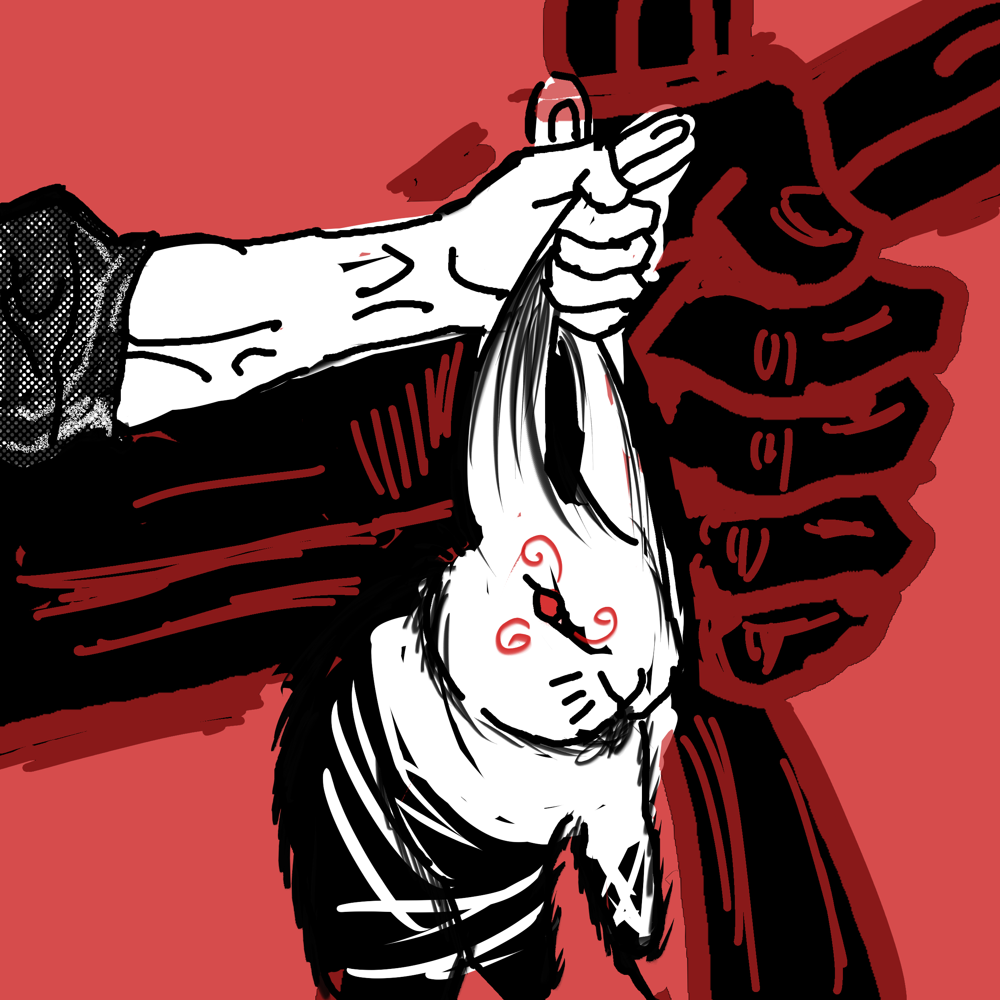

刷脸通过宿舍的铁门后，能看见一排长椅，长椅的四周散落着大大小小的烟蒂。所说看不见是最好，但即使烟头被我看见了，似乎也不能诱使我此刻抽烟。相反，散落一地的它们在提醒我这一行为的不健全。
两排长椅分别靠近正相对的两栋宿舍楼，四月的现在，宿舍的一墙上只有一空调的风扇在旋转，与其他相对静止的风扇对照看来，似乎它就是唯一的活物，它如此无声的宣言着。
一只鸟蹦跳着轻轻点过地面，向不知什么方向从我眼前飞去。同时，有跑着出去的人，也有慢悠悠走回宿舍的人。
而无论哪边，在我看来已经是如同是无异于静止的动作。重复动作的循环，随着时间的积累、次数的叠加，会渐次转化为背景噪音一样的东西。总而言之就是不会再被被动地感受到了。
白色的蝴蝶环绕着低空的草丛八字飞舞着，这次似乎是朝着风的方向飞走的。
似乎这就是没什么可写的日常，反复咀嚼后的木糖醇的味道一般，乏味可陈。然而也不是吐掉它的时机，最后，就只能让它以黏稠的形态包裹在舌头上。实在百无聊赖以至于产生割掉舌头的想法。
左边走过主持人装扮的女人，留下白色的印象。旁边，一个在摆弄三脚架的男人，另一个男人在我旁边的长椅上坐下。似乎是要拍摄什么。
没办法，只得转而坐到宿舍门口的台阶上。而白色的女人又好像在回避什么一样的，对手机里的人进行着应付。转头又走了，走到我面前的建筑物里。
这座建筑物不是一开始就有的，是后来建成的。但奇怪的是，我不记得它最初是一块怎样的用地了。是空地？还是洗衣房？记忆模糊了。总之一个活动室，也可用作自习。
然后白色又出来，和两个男人继续交谈。没有兴趣了，回头一看，旁边堆着刚刚没注意到的纸箱子。大概是宿舍阿姨捡来的，两栋宿舍的垃圾，应该是可以卖不少钱。
天气总是变化，刚才还是阴凉的蓝色，转眼已经是炙热的红色了。阳光烤手机上，手持的温度变高，总是让我觉得对手机不好。不由得焦躁起来。
麻雀，这个随处可见的物种，似乎遍布了整个学校。无论在哪，它都能从角落里蹦跳着进入视野内。事实上，我似乎缺乏对于生物的兴趣，不仅是对于真实的人类。对于小动物也没有兴趣。
只记得小时候养过一只兔子，在笼子里的时候，它很老实。于是试着将它放到屋子里，结果像见了鬼一样很快地逃离了我。可越是这样，想要触碰到它的欲望就越发膨胀。
可即使碰到了，也不是就能够抓住了，它仍然有挣脱的能力。后来我知道，抓住它的耳朵就行了。于是我抓住它的耳朵，它马上就如同僵硬了一般再无反抗。

兔子会感到疼吗，它会恨我吗？这几乎是我在那下一瞬间就迸出的想法。但很快，这就变得不再重要，重要的是，我必须抓住它的耳朵才能控制它。重要的是，不这样，它就会跑到我看不见的地方，不再回来。
后来，因为去了外地，它被寄养到祖母家。在外地期间我得知，它被祖母养的狗吃掉了。据说是狗自己破开笼子，将它叼出来吃掉的。
真是奇怪啊，明明狗绝无可能抓住它的耳朵，它为什么没能跑掉呢。大概是因为笼子太小了吧，而且动物的反应能力是人类所不能及的，它们应该在一个水准，不能用我的反应速度来衡量它们。
之后就再无对动物的兴趣了，它们大多要么害怕人类，要么想吃人类。总之，也许不同的物种就是天生处不来吧。